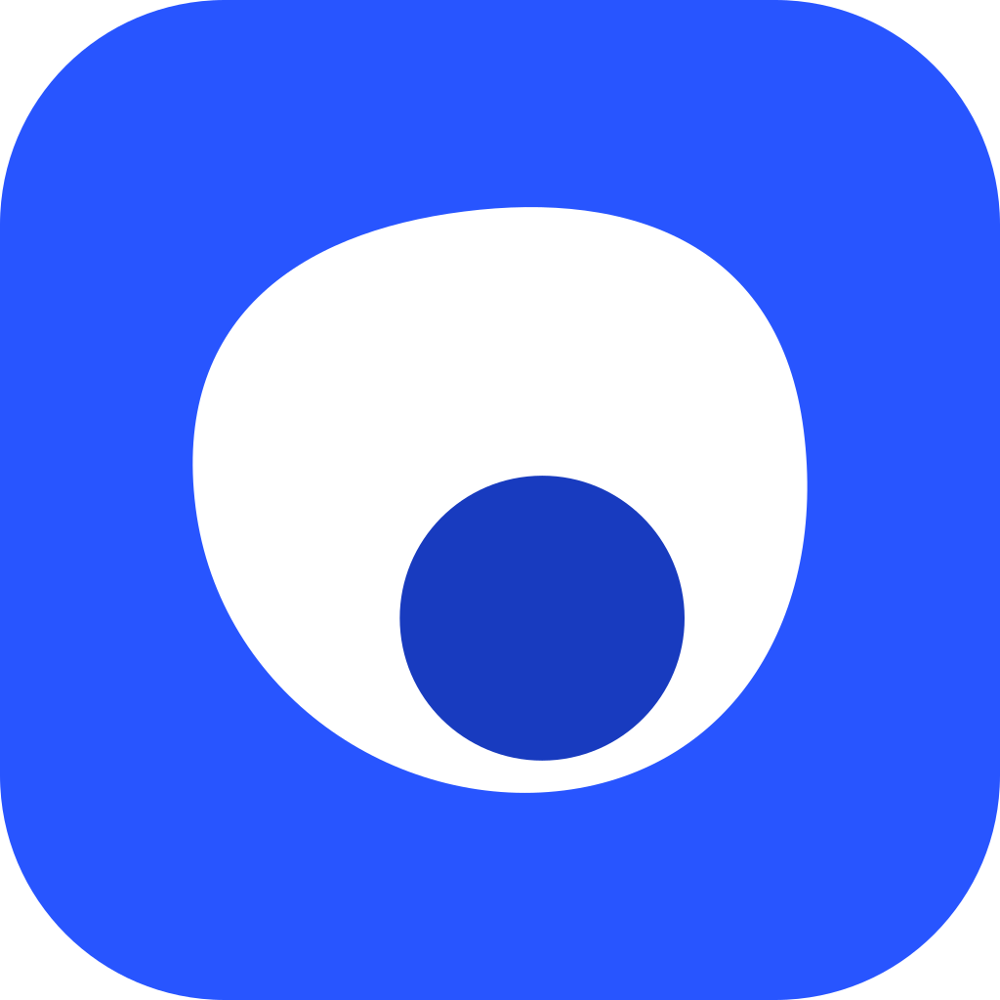

Moskito Easy MCPLet Claude and ChatGPT drive your Adobe apps.
Installs the panels and connects your assistants.
What does this change on my Mac?
- Copies the MCP panels into
~/Library/Application Support/Adobe/CEP/extensions - Turns on Adobe's PlayerDebugMode, a global Adobe preference, so unsigned panels are allowed to load
- Adds Adobe MCP's servers to Claude Desktop, Claude Code and Codex config files — a timestamped backup of each is kept beside it
- Downloads a small Python runtime on first run
- It never touches your documents
Your Adobe apps
Blue buttons are what's needed to get working. Outlined ones are suggestions. Grey ones are optional.